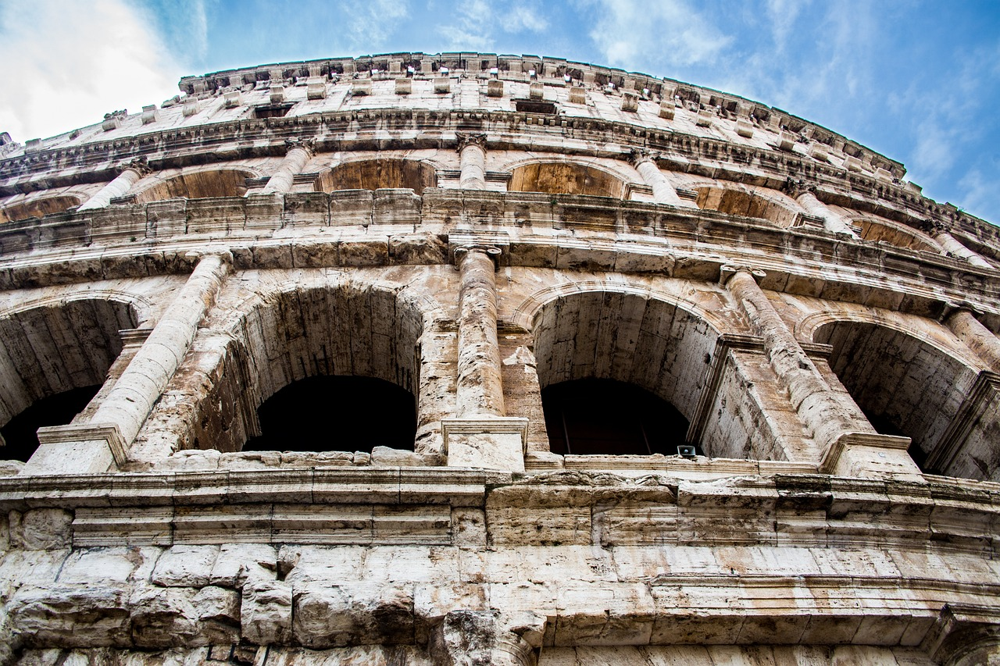

Collosseum

The Colosseum, also known as the Flavian Amphitheatre, is one of the most iconic landmarks in Rome, Italy, and a symbol of the Roman Empire's grandeur. This massive structure was originally used for public spectacles such as gladiatorial contests, mock naval battles, animal hunts, and executions. Its capacity could hold up to 50,000 spectators, making it one of the largest amphitheaters ever built.
History:
Construction and Design:
The Colosseum was commissioned by Emperor Vespasian of the Flavian dynasty in AD 70-72. His son Titus completed it in AD 80, and further modifications were made by Domitian, also part of the Flavian family. The Colosseum was built over the site of a large artificial lake that had been part of Emperor Nero’s luxurious Golden House (Domus Aurea).
Purpose:
The Colosseum was primarily a venue for public entertainment, meant to demonstrate the power and generosity of the emperors. The games held there were often free and open to the public, serving both as entertainment and a form of political propaganda to maintain the favor of the people.
Architecture:
It is an architectural marvel of the ancient world, made of concrete and stone. Its elliptical design allows for excellent sightlines from almost every seat, and it features a complex system of corridors, passages, and stairs that enabled the quick movement of both spectators and gladiators. The Colosseum was originally covered with a large retractable awning, called the "velarium," to protect spectators from the sun.
Decline:
The use of the Colosseum as a venue for public spectacles declined after the fall of the Roman Empire. Earthquakes and stone robbers also contributed to its deterioration over the centuries. By the Middle Ages, it was repurposed for various uses, including housing, workshops, and even a fortress.
Modern Day:
Today, the Colosseum is one of the most popular tourist destinations in the world and a UNESCO World Heritage site. It stands as a reminder of Rome’s ancient past and a testament to the engineering and architectural prowess of the Romans.
Though much of its original grandeur has been lost, the Colosseum still stands as a symbol of Rome’s imperial power and the complexity of ancient Roman entertainment culture.